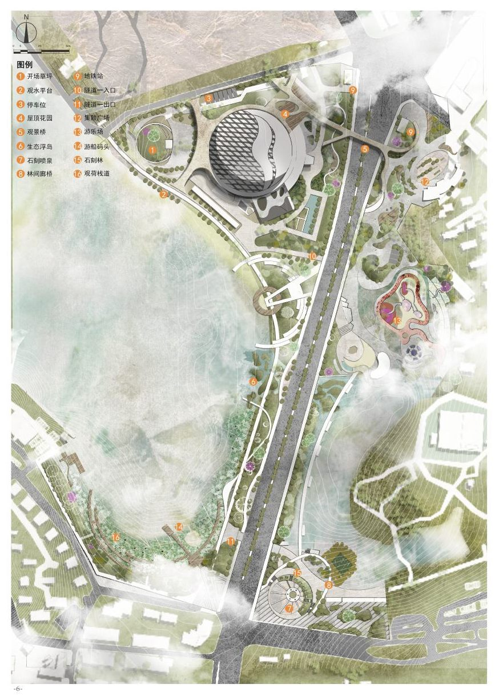
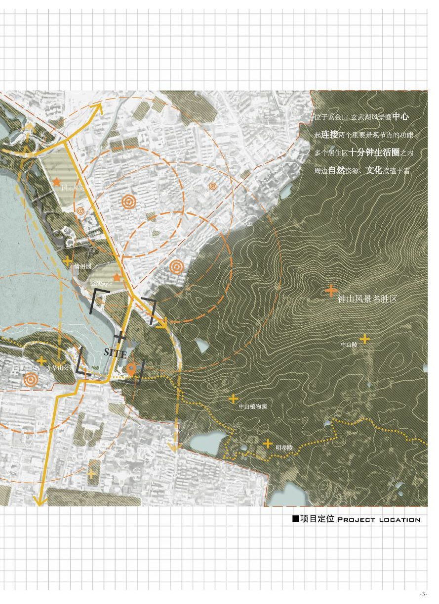
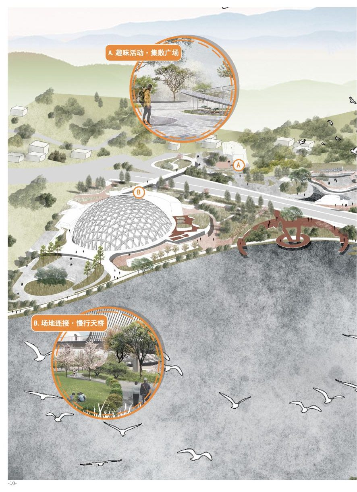
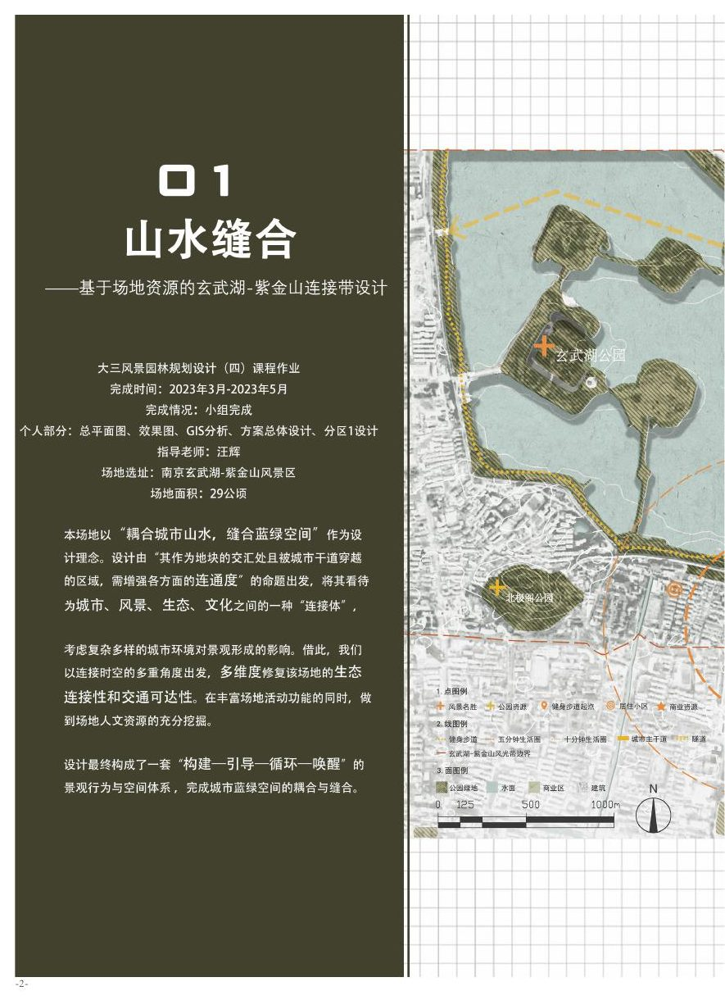

Shanshui Stitching
山水缝合 - Xuanwu Lake-Zijin Mountain Connection Belt Planning and Design
The project explores how a fragmented urban interface between Xuanwu Lake and Zijin Mountain can be repaired through ecological corridors, public-space stitching, pedestrian experience design, and landscape infrastructure.
- Time
- Mar 2023 - May 2023
- Site
- Xuanwu Lake-Zijin Mountain area, Nanjing
- Scale
- 29 ha
- Role
- Group work; responsible for master planning, GIS analysis, overall design coordination, rendering, and subarea design.



